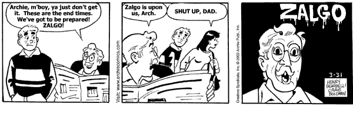

Zalgo text is a form of distorted text that appears to have a chaotic, glitchy appearance due to the addition of numerous diacritical marks, such as accents, tildes, and other combining characters. The term "Zalgo" originated from a meme created in 2004 by Dave Kelly (known as "Shmorky") on the Something Awful forums, referring to a fictional entity associated with madness and chaos. Zalgo text gained popularity online as a way to represent eerie, unsettling, or corrupted digital content, often used in internet horror stories, creepypasta, and various forms of digital art to evoke a sense of unease and disorder.
